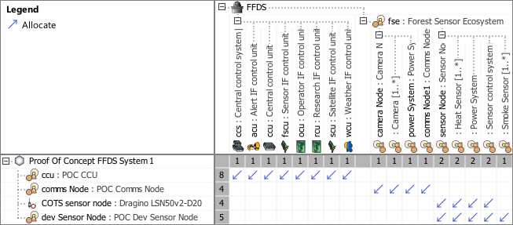
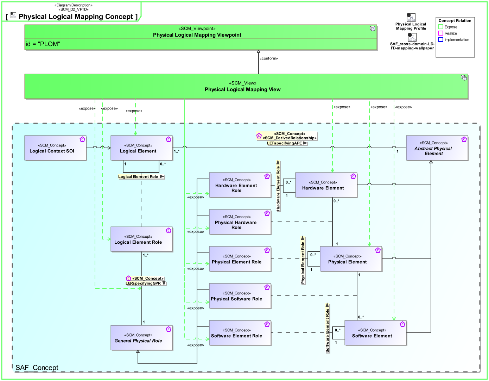
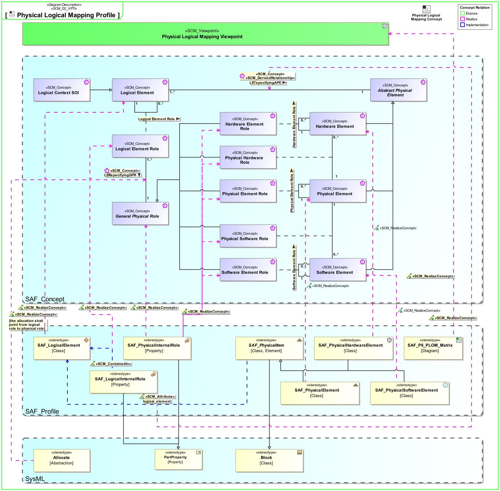

P8_PLOM Physical Logical Mapping Viewpoint
| Domain | Aspect | Maturity |
|---|---|---|
| Physical | Traceability & Mapping |

The Physical Logical Mapping Viewpoint supports the definition of the assignment of conceptual logical system elements to physical system elements comprising the SOI.
Following the identification of physical system elements capable of performing the system functions of logical elements, the Physical Logical Mapping Viewpoint provides feedback to the System Architecture Definition process to consolidate or confirm the allocation, partitioning, and alignment of logical elements to physical elements that comprise the SOI.
The Physical Logical Mapping Viewpoint supports the “Design Definition Process” activities of the INCOSE SYSTEMS ENGINEERING HANDBOOK 2023 [§2.3.5.5] and contributes to the artifact “Traceability Mapping”.
Furthermore, the Physical Logical Mapping Viewpoint supports the “Allocation and Partitioning of Logical Entities to Physical Entities” activities of the INCOSE SYSTEMS ENGINEERING HANDBOOK 2015 [§4.4.2.7].
A assignment matrix featuring
The following Stereotypes / Model Elements are used in the Viewpoint:
The Diagram shows the concepts exposed by the viewpoint, and related concepts if necessary.

| Concept | Documentation |
|---|---|
| LERspecifyingGPR | Specifies that a usage of a Logical Element specifies functions for the usage of a Physical Element. |
| Logical Element Role | Specifies the fact that a logical element comprises logical elements. |
| Logical Element | Describes a conceptual Logical Element as specification for an implementation of a system, or system element. |
| Hardware Element Role | Specifies the fact that a hardware structure comprises hardware elements. |
| Hardware Element | Pure Hardware Elements. Similarity with the V-Model "hardware unit". |
| Physical Element Role | Specifies the fact that a physical structure comprises physical elements. |
| Physical Element | A composition of Hardware and Software Elements. Similarity with the V-Model segments and system. See [VXT]. |
| Physical Hardware Role | Specifies the fact that a physical structure comprises hardware elements. |
| Physical Software Role | Specifies the fact that a physical structure comprises software elements. |
| Software Element Role | Specifies the fact that a software structure comprises software elements. |
| Software Element | Pure Software Elements. Similarity with the V-Model "software unit". |
The Diagram shows the implementation of exposed concepts.
